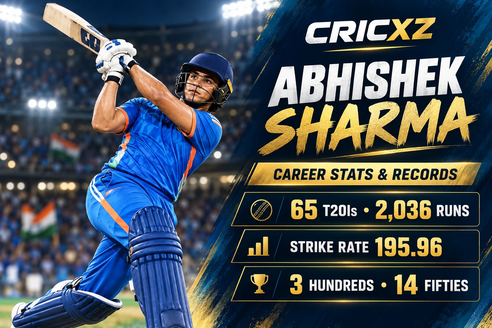

T20I
- Matches
- 70
- Batting innings
- 69
- Runs
- 2,240
- Highest score
- 135
- Batting average
- 33.43
- Strike rate
- 196.84
- Hundreds
- 4
- Fifties
- 14
- Sixes
- 158

Abhishek Sharma is an Indian left-handed opener known for explosive powerplay batting and six-hitting. After the Wellington T20I on 27 October 2026, he had 2,240 runs and 158 sixes in 70 T20Is.
Abhishek hit 113 from 38 balls, including nine fours and 11 sixes, in Wellington on 27 October 2026. His 35-ball century helped India chase 199 and seal a 3-0 series lead. Read the match report.
T20I statistics updated: 27 October 2026, after the New Zealand third T20I. IPL and List A figures are the previous 12 October 2026 snapshot.
Abhishek remains an active international player, so these figures may change after his next appearance.
After India lost Sanju Samson early, Abhishek attacked immediately and reached fifty from only 18 deliveries. He finished with 113 from 30 balls, while adding 108 with Ishan Kishan from just 40 balls.
The innings carried him beyond 2,000 T20I runs and helped India post 223. Arshdeep Singh's 3/44 then completed a 14-run win. Read the full India vs New Zealand third T20I report.
Abhishek Sharma rose to global prominence following a historic IPL 2024 season with the Sunrisers Hyderabad, where he dismantled bowling attacks with ease. Earning his national call-up soon after, he proved his mettle on the international stage by smashing a 46-ball century in just his second T20I match against Zimbabwe.
As a left-handed opener, his approach is built on pure hand-eye coordination and immense power against both pace and spin. After his breathtaking 20-ball fifty in the Asian Games 2026 Final, he continued to build his reputation as an attacking powerplay batter.
After the New Zealand third T20I on 27 October 2026, Abhishek Sharma had hit 158 sixes in 70 T20Is. Career totals change as he plays further matches.
In Wellington he scored 113 from 38 balls, striking 11 sixes and nine fours. He reached his century off 35 balls and shared a 133-run opening partnership with Vaibhav Sooryavanshi.
Against Afghanistan in Delhi on 17 September 2026, he scored 108 from 34 balls with 11 sixes. The BCCI reported his 30-ball century as the fastest by an Indian in men's T20Is.
He had 158 T20I sixes after the New Zealand match on 27 October 2026, according to the cited career statistics.
He hit 11 sixes in his 113 off 38 balls in Wellington on 27 October 2026.
6 July 2024
Against Zimbabwe at Harare Sports Club, Harare.
12 May 2018
For Delhi Daredevils against Royal Challengers Bangalore.
6 October 2017
For Punjab against Himachal Pradesh in the Ranji Trophy.
Career sixes after the third T20I against New Zealand on 27 October 2026.
Reached fifty from 18 balls during his 69 in the Indore T20I.
Scored a breathtaking 100 off just 46 balls against Zimbabwe in his second international match.
Hit over 40 sixes in a single IPL season for SRH, operating at a strike rate above 200.
Played a crucial all-round role in India's victorious 2018 ICC Under-19 World Cup campaign in New Zealand.
T20I career statistics and the latest innings were checked on 27 October 2026. IPL and List A figures are dated 12 October 2026.